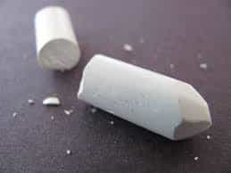
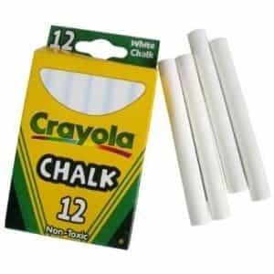

< < < Back
White Chalk May Be The Missing Ingredient To Increasing Your Lifts – Return Of Kings
If you will recall, I wrote an article a few months ago expressing the dubious experiences I have had with dietary supplements. And I stand by that, as I do with a similar conviction that the fitness hobbyist doesn’t need fancy equipment such as weightlifting belts to aid him: namely, if you’re not attempting to set a weightlifting record, you don’t really need a belt.
While I will cautiously advocate buying equipment such as Fat Grips to make your workout harder (I emphasize caution on this specific device not because they’re not useful, but rather due to the fact that grip can be trained equally as well without spending money), there remains only one tool I would advocate to assist your compound lifts, a tool that doesn’t provide additional support but can add 20-30 pounds to some of your lifts. That tool is: chalk.

A Geology Lesson
Chalk, or calcium carbonate (CaCO3) is a common sedimentary rock that is formed from calcite shells and millions of years of weathering and surface gradations. Indeed, most “chalk” purchased nowadays is, in fact, calcium sulfate, talc, or some other powdery mineral more common than naturally mined calcium carbonate. Whatever the composition of the purchased “chalk,” they all have in common a property of increasing friction and wicking up moisture. And this property is where chalk benefits you.
Chalk In Physical Fitness
You’ve likely seen Olympic weightlifters using chalk on their hands before lifts to reduce perspiration, as well as other strength-intensive sports such as gymnastics and rock climbing. Even in the “barest” and most simple of these sports, such as Olympic style lifting or free-scale rock climbing, chalk is used. As stated previously, the chalk does not enhance strength at all so much as allow you to lift to your maximum strength and ability. To speak from my own experience, my maximum deadlift is 350 pounds with chalk, but only 325 pounds without—a discrepancy that can only be attributed to sweaty palms weakening my hands.
I also find that chalk helps with stability in pressing lifts such as the bench press and over head press: it allows you to grip harder, causing increased muscle flexion and thus increased muscular force through the principle of “proprioceptive muscular tension“.
I’ll even bring a bottle of chalk along when helping friends move furniture, as it gives me a better grip on uneven heavy objects.
Of course, the usefulness of chalk is only compounded in ring gymnastics, rock climbing, and other sports that involve a risk of dying should you lose your grip (or should I say a higher risk of dying than olympic lifting, as all of the sports listed can give truly grotesque injuries).
How To Get Chalk
It’s about now that you probably want to obtain some chalk for your own purposes, and are thus asking how to get it. Specifically made weightlifter’s or gymnasts chalk can be purchased from sporting goods stores and websites, in both powdered and block form.
But, if you’re a stingy son of a bitch like myself—and really, if you’re reading this website, or similar websites, there’s no reason that you shouldn’t be—then there’s a much easier way to get usable chalk: grind it yourself.
The first step is to go to a nearby dollar store—or the equivalent in whatever country you live in—and buy a pack of white blackboard chalk (for obvious reasons, buying multicolored sidewalk chalk is not advised). This is exactly the sort of cheap, crumbly chalk that you hated to use in elementary school, but for weightlifting purposes is in some ways preferable to a higher quality stick.

Once obtained, you have to grind it. If you’re high agency or mildly autistic like myself, then you already own a mortar and pestle.

If not, then grab a hammer, a heavy ashtray, a big rock, or something similar, and grind the chalk into a fine powder. Feel free to put on a movie or a podcast as you do this-that’s how I write most of my articles.
There should be no large chunks in it, and when it’s done, put it inside some sort of container. I personally put it inside a plastic water bottle, which allows me to parcel it out in controlled portions without spilling

And with that, you’re done. Just an hour or two of work, and you’ll already have increased the amount of weight you’ll be able to lift and the dexterity of your hands.
Read More: How Kratom Can Help With Your Weightlifting Routine